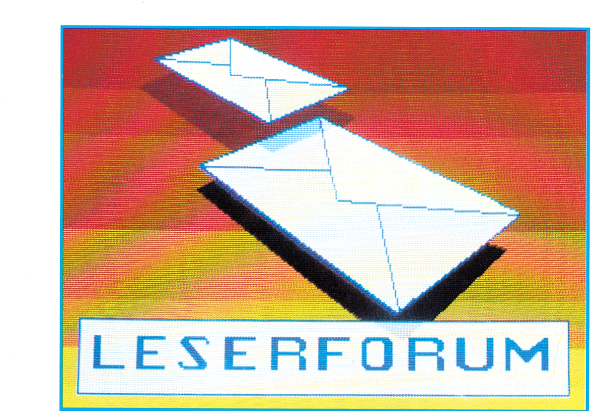

Wer kann helfen?
(1) Bei dem Programm »Multidata 64« steigt der Computer beim Programmpunkt »Reorganisieren« regelmäßig aus. Wer kennt die Ursache?
(2) Wie bekomme ich einen »Print-Shop«-Ausdruck auf dem Star SG 10-C?
Wer kennt die SFD 1001?
Ich möchte gerne wissen, ob es eine Möglichkeit gibt, mit der SFD 1001 Disketten zu lesen, die mit dem 1541-Laufwerk aufgezeichnet wurden (egal, ob Soft- oder Hardware-Lösung).
Hardcopy für Seikosha GP 100 VC?
Ich suche eine Hardcopy-Routine für den Seikosha GP 100 VC, um die Grafik auf dem 80-Zeichen-Bildschirm meines C 128 auszudrucken. Das Format sollte möglichst eine ganze DIN-A4-Seite umfassen.
Tonsignale grafisch darstellen?
Wie kann ich ein Tonsignal, das am externen Eingang des SID eingespeist wird, am Bildschirm grafisch darstellen?
Recompiler für Petspeed?
Wer hat einen Recompiler, um mit dem Petspeed-Compiler übersetzte C 64-Programme wieder lesbar zu machen? Auch ein Programm, mit dem sich Petspeed-Code auch nur einigermaßen lesbar machen läßt, wäre schon eine Hilfe.
MIDI mit C 64?
Ich habe mir einen Synthesizer mit MIDI-Interface zugelegt, das über die RS232C-Schnittstelle des C 64 angesteuert werden kann. Ein zum Synthesizer mitgeliefertes Demo-Programm arbeitet auch einwandfrei, aber ich weiß nun nicht, wie ich diese RS232C-Schnittstelle selbst ansprechen kann, um den Synthesizer per Computer programmieren zu können. Die Pinbelegung des Interfaces ist wie folgt:
Pin A: Masse, Pin B und C kurzgeschlossen und mit einer Leitung an den Synthesizer, Pin M ebenfalls an den Synthesizer.
Eine Analyse des Demoprogramms ist nicht möglich, denn es ist ein mit Autostart versehenes Maschinenprogramm. Wer kann helfen?
Sandberg 99, 4150 Krefeld
Textomat mit Görlitz-Interface?
Mein Drucker Epson FX-80 mit Görlitz-Interface läßt sich problemlos an fast alle Programme anpassen, mit Ausnahme der drei Data Becker-Programme Textomat plus, Kalkumat und Supergrafik. Trotz intensiver Mithilfe meines Händlers und ausführlichem Studium der Handbücher ist es mir nicht möglich, Hardcopies der Grafiken von Textomat und Supergrafik sauber auszudrucken.
Es erscheinen jeweils viele zusätzliche, wahllos verstreute Zeichen auf dem Papier. Beim Kalkumat ist nur ein Ausdruck in Schmalschrift und ohne Umlaute möglich.
Ein Anruf bei Data Becker brachte mir lediglich den Rat, mein Interface wegzuwerfen und eines von Data Becker zu kaufen. Wer weiß eine billigere Lösung?
SX 64 mit 12 V?
Ich möchte meinen tragbaren Commodore SX 64 auf 12 V Spannungsversorgung (Akku, Autobatterie) umrüsten. Wo kann ich eine Umbauanleitung bekommen und wer hat Erfahrungen im Umrüsten beziehungsweise nimmt den Umbau vor?
Dia-Projektoren mit C 64 steuern?
Ich möchte vier bis fünf Dia-Projektoren mit stufenloser Helligkeitsregelung an einen Commodore 64 anschließen, die Projektoren also nicht nur schalten, sondern auch regeln. Die Steuerung sollte sich zusätzlich für vertonte Dia-Vorführungen von einem Tonbandgerät synchronisieren lassen. Wer kann hier mit Rat und Tat helfen?
Hinter der Brake 12, 3008 Garbsen 2
Echtzeituhr in Basic 7.0?
(1) Wie kann man im Basic 7.0 des C 128 eine Echtzeituhr programmieren, die nur auf Abfrage die Zeit ausgibt?
(2) Kann man MS-DOS-Disketten mit dem C 128 unter CP/M lesen?
(1) Eine solche Uhr ist bereits »serienmäßig« vorhanden. Sie heißt TI$ und kann mit »?TI$« abgefragt und mit »TI$="hhmmss" auf hh Uhr, mm Minuten, ss Sekunden gestellt werden.
(2) MS-DOS verwaltet das Disketten-Directory unterschiedlich zu CP/M, daher können MS-DOS-Disketten grundsätzlich nicht mit einem CP/M-Computer gelesen werden.
»Apfelmännchen« mit MPS-Drucker
Wie kann ich mit einem MPS 801 die Apfelmännchen-Grafik als Hardcopy ausdrucken?
Ausgabe 4/86
Auch in diesem Fall hilft wieder Hi-Eddi! Die Apfelmännchen-Files einfach mit Hi-Eddi oder Hi-Eddi plus einlesen und mit einer passenden Hi-Print-Druckroutine ausdrucken — fertig.
Natürlich lassen sich die Grafiken vor dem Ausdruck mit Hi-Eddi auch noch hübsch verändern und bearbeiten und zudem noch im »Screen-Magic-Modus« von Print-Shop verwenden.
Info: Mini-CAD mit Hi-Eddi plus auf dem C 64, Markt & Technik, MT-Buch 736, 48 Mark
RS232C und CP/M?
Beim C 128 gibt es unter CP/M Probleme, die RS232C-Schnittstelle anzusprechen, die im C 128- und im C 64-Modus einwandfrei funktioniert. Unter CP/M wird bei Aufruf der entsprechenden Routinen zwar die Ausgabe verlangsamt, aber an keinem einzigen Pin des User-Ports erscheint ein Signal.
Da es unter CP/M anscheinend Probleme mit der seriellen Schnittstelle gab, hat Commodore die entsprechenden CP/M-Routinen einfach mit einem RET-Opcode »gesperrt«. Die seriellen CP/M-Routinen lassen sich zwar noch aufrufen, aber kehren ganz einfach unverrichteter Dinge wieder zurück.
Hypratext mit DPS 1120
Wie kann ich »Hypratext« (Ausgabe 10/85) und »Profiprint« (Ausgabe 11/85) mit einem Typenraddrucker DPS 1120 zum Laufen bringen?
Reyweg 42, 5135 Selfkant-Schalbruch
Eine Lanze für die 1541…
Jetzt bin ich schon seit etlichen Jahren Benutzer von Commodore-Computern, zuerst eines VC 20 und mittlerweile eines C 128. Seit Jahren verrichtet bei mir ein vielleicht betagter, aber sehr zuverlässiger 1525-Drucker seinen Dienst. Meine Uralt-Datasette, von der ich nicht einmal weiß, wie man sie justieren kann, hat mich die ganzen Jahre über noch nie im Stich gelassen. Seltsamerweise habe ich nun über diese Geräte noch nie ein schlechtes Wort in der Fachpresse gelesen, während über die gute alte 1541-Floppy ständig hergezogen wird. Da ist dann die Rede von verschiedenen Wärmeausdehnungen, die eine Dejustage des Schreib-/Lesekopfes verursachen sollen. Vor Wärmestaus bei Dauerbetrieb wird gewarnt. Ein Leser riet einmal dazu, die 1541 einfach auf die Seite zu stellen, dann gäbe es keine Wärmeprobleme mehr. Es tut mit leid: Wenn ich meine 1541 auf die Seite stelle, dann fällt sie sehr leicht um.
Am meisten aber wird über die Schnelligkeit des 1541-Laufwerks hergezogen. Sie sei viel zu langsam, heißt es da. Das verstehe ich nicht.
Da gibt es Riesenanzeigen, in denen Floppy-Speeder, Turbos oder »Final Cartridges« angepriesen werden, ganz zu schweigen von Hypra-Load und dem 64'er-DOS. Das verstehe ich auch nicht.
Ja, haben denn die Leute gar keine Zeit mehr? Ist denn das Berufs- oder manchmal auch noch das Schulleben nicht schon hektisch genug? Wenigstens meinem Hobby möchte ich doch in Ruhe nachgehen können. Deshalb möchte ich an dieser Stelle einmal klarstellen, wie ich mit meiner 1541 umgehe, und warum ich gar nicht daran denke, mir eine 1571 oder irgendeinen Floppy-Speeder zuzulegen:
Etwa eine Stunde vor Feierabend rufe ich vom Büro aus zu Hause an und bitte meine Frau, die Floppy einzuschalten und CP/M 3.0 zu laden. Wenn ich dann nach Hause komme, ist alles bereit und ich kann sofort loslegen. Mein Radclub ist um zwei neue Mitglieder reicher geworden; die Adressen müssen also gespeichert werden. Kein Problem, ich lade dBase II und trinke derweilen erst mal ein köstliches Pils. Danach gebe ich die Daten ein und speichere erst mal ein Weilchen. Während des Abendessens lade ich Wordstar, weil mein Hauswirt Theater macht und ich ihm einen erstklassig formatierten Brief schreiben möchte.
Dann kommt der gemütliche Teil, der Sohn möchte noch ein wenig Summer Games spielen. Das Laden dauert nur ein gutgezapftes Pils lang. Ich komme in Stimmung. Das erste Spiel gewinnt Peter, während das zweite geladen wird, habe ich Gelegenheit, mir die Tagesschau anzusehen und ein, zwei Worte mit meiner Frau zu reden.
Während meine Frau eine Stunde später unseren Sohn ins Bett bringt, fällt mir auf, daß »Girls they want to have fun« auch nicht das Gelbe vom Ei ist, und ich beschließe, die Diskette zu formatieren! Nach dem »Tatort« im Ersten ist die Diskette wieder jungfräulich und wird während des »Heute-Journals« aus dem Disketten-Inhaltsverzeichnis gestrichen. Während der Abendwäsche lade ich noch mein Lieblings-Adventure, um heute wenigstens einen Schritt vorwärts zu kommen. Dies geschieht auch, nur ein Viertelstündchen noch den Spielstand sichern und alles ist klar. Meine Frau allerdings ist leicht verärgert…
Für mich steht fest: Die 1541 ist aus meinem Leben nicht mehr wegzudenken. Mit diesen ganzen Beschleunigern und Turbos hat man doch überhaupt keine Zeit mehr für die Familie. Und wo bliebe die abendliche Weiterbildung am Fernseher, wenn die Ladezeiten für Programme drastisch reduziert würden? Da geht dann alles hoppla, hoppla, und man hat rein gar nichts mehr vom Leben.
»Die 1541 — 200mal schneller!« — du liebe Güte, ohne mich!
C 128 ohne Commodore-Monitor?
Welche Lösung gibt es, wenn man den C 128 auf 80 Zeichen bringen will, ohne den Original-Monitor von Commodore verwenden zu wollen? Welche Firma stellt eine entsprechende Kabelverbindung her? Von Commodore ist leider nur die Auskunft zu erhalten, daß man sich doch bitte an den Fachhandel wenden solle. Fachgeschäfte, in denen ich dann nachgefragt habe, wußten von nichts. Wer kann mir weiterhelfen?
Leider ist Ihr Problem auch nicht so generell zu lösen, denn es gibt eine ganze Zahl verschiedener Steckernormen. Außerdem wollen Sie ja bestimmt nicht auf den 40-Zeichen-Modus verzichten, so daß auf jeden Fall eine Spezialschaltung notwendig wird, da der C 128 ja bekanntlich zwei völlig unterschiedliche Video-Normen für 40 und 80 Zeichen verwendet. Falls Ihnen ein monochromer Monitor ausreicht, dann können Sie die in unserem »128’er«-Sonderheft abgedruckte Schaltung verwenden, mit der Sie von der Computertastatur aus zwischen 40 und 80 Zeichen umschalten können. Eine Übersicht über Farbmonitore auch für den C 128 finden Sie in der Ausgabe 1/86 des 64’er-Magazins. Welche Kabelverbindung Sie benötigen, richtet sich nicht zuletzt auch nach dem von Ihnen gewählten Monitor-Modell. Sie müssen sich also zuerst für einen Monitor entscheiden, ehe Sie sich ein Kabel kaufen können.
MPS 801 am C 128?
Kann der Commodore-Drucker MPS 801 am C 128 in allen drei Betriebsarten (C 64, C 128, CP/M) ohne Interface betrieben werden? Die befragten Commodore-Händler beantworteten diese Frage zu jeweils gleichen Teilen mit »ja« und »nein«.
Alle Commodore-Drucker arbeiten in allen drei Betriebsarten einwandfrei mit dem C 128 zusammen. Da Commodore jedoch sich beim Zeichensatz seiner Computer (und Drucker) an keinerlei Normen wie ASCII oder DIN gebunden fühlt, treten Probleme beim DIN-Modus des C 128 auf. Im DIN-Modus ist der Zeichensatz nämlich entsprechend der DIN-Norm codiert (also Standard-ASCII-Zeichensatz plus deutsche Sonderzeichen). Alle MPS-Drucker verstehen aber nur die »Commodore-Norm«, so daß Sie den C 128 beim Betrieb mit einem MPS-Drucker nicht im DIN-Modus verwenden sollten. Anders sieht die Sache bei CP/M aus. Auf der Systemdiskette befindet sich ein Programm namens »SETUP COM«, mit dem Sie das CP/M-System an verschiedene Druckertypen anpassen können. Wenn Sie einen Commodore-Drucker verwenden, wählen Sie bei diesem Programm einfach die entsprechende Option (»C« für Commodore) aus und können dann sogar, falls Ihr Drucker dazu fähig ist, auch deutsche Umlaute zu Papier bringen. Ein Interface ist für Commodore-Drucker nicht erforderlich.
Zwei C 64 koppeln?
Ich möchte zwei C 64 mit einem Floppy-Kabel über den seriellen Port miteinander koppeln, so daß Programme direkt von einem Gerät zum anderen übertragen werden können. Allerdings soll das Ganze ohne Treiber-Software funktionieren.
Ohne Software funktioniert bei einem Computer leider gar nichts. Auch für das Laden eines Programms von der Floppy beispielsweise sind entsprechende Routinen im Betriebssystem des C 64 vorhanden. Für die Koppelung zweier C 64 gibt es keine fertigen Routinen im Kernel. Folgerung: Man muß sich solche Routinen entweder selber schreiben, oder sich umhören, wo man sie herbekommen kann. Ohne Treiber-Software aber läuft gar nichts. Eine ausführliche Analyse und Beschreibung des Problems samt dem notwendigen Programm enthält das Buch »Basic Grundkurs mit dem C 64«, das im Markt & Technik-Verlag erschienen ist. Auch in der 64’er Ausgabe 2/86 finden Sie einen Beitrag hierzu.
Probleme mit Maschinensprache?
Ich finde es schade, daß immer mehr Listings im 64’er-Magazin in Maschinensprache abgedruckt werden. Da ich keine Maschinensprache besitze, kann ich mit diesen Listings nichts anfangen.
Um die im 64’er abgedruckten Maschinensprache-Programme einzugeben und zu starten braucht man keine teuren Programme und auch keine Kenntnisse der Maschinensprache. Alle Maschinensprache-Programme werden als sogenannte »MSE-Listings« ausgedruckt. Um diese Programme eingeben zu können, braucht man nur das 64'er-MSE-Programm (MSE: Maschinen-Sprache-Eingabe), daß in den meisten Sonderheften und von Fall zu Fall auch im 64'er-Magazin abgedruckt wird (zuletzt in der Ausgabe 2/86). Auch auf jeder Leserservice-Diskette ist der MSE natürlich ebenfalls enthalten. Sie können den MSE aber auch zum Abtippen direkt von uns bekommen, natürlich umsonst. Dazu müssen Sie uns nur einen frankierten DIN-A4-Umschlag, der an Sie selbst adressiert ist, zuschicken. Wenn Sie dann noch einen Zettel beifügen mit der Aufschrift »Schickt mir doch um Himmels Willen endlich einmal euren MSE!« (oder so ähnlich), dann werden Sie postwendend das MSE-Listing mit ausführlicher Erläuterung zur Anwendung von uns erhalten.
Hebräisch für den C 64
Kann man den C 64 irgendwie für Textverarbeitung in hebräischer Sprache umrüsten?
Ausgabe 4/86
Ich verwende ein in Israel für den C 64 geschriebenes Textprogramm, womit man sehr gut hebräisch schreiben und mit einer Reihe grafikfähiger Drucker auch zu Papier bringen kann. Das Programm heißt Alpha-Beta und kann direkt aus Israel bezogen werden.
Info: BUG Microcomputer Books & Software, Dizengoff Centre, Tel-Aviv 64332, Israel
SX 64 ohne Kassettenpuffer?
Die beiden Programme »Checksummer 64 V3« (Sonderheft 6/85) und »Haushaltsbuch« (Ausgabe 7/85) für den C 64 kann ich auf meinem SX 64 nicht verwenden. Beide Programme legen Daten im Kassettenpuffer (ab Adresse 828) ab. Ich erhalte nun bei beiden Programmen ständig die Fehlermeldung »OUT OF MEMORY«, weil der SX 64 ja gar keinen Kassettenpuffer hat. Wer hatte das gleiche Problem und hat die Programme umgeschrieben?
Warum Sie diese Fehlermeldung erhalten, kann aus der knappen Beschreibung leider nicht gefolgert werden — am fehlenden Kassettenpuffer liegt es jedenfalls nicht. Der SX 64 hat zwar keine Anschlußmöglichkeit für eine Datasette, aber selbstverständlich ist ab Adresse 828 nicht einfach ein »Schwarzes Loch«, das alle Bits und Bytes verschluckt, sondern es befindet sich hier ganz normaler Speicher, der halt nur vom Betriebssystem nicht genutzt wird.